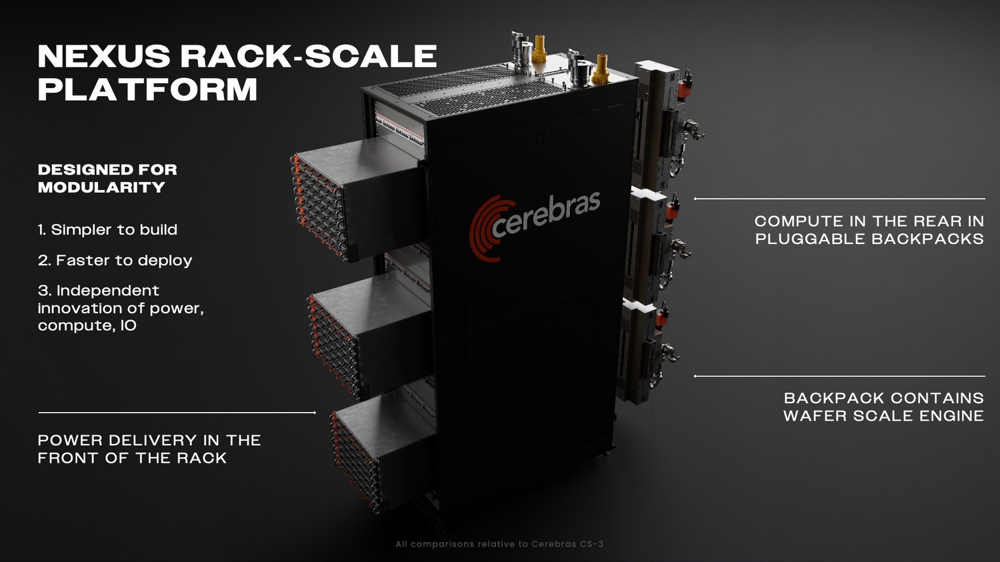
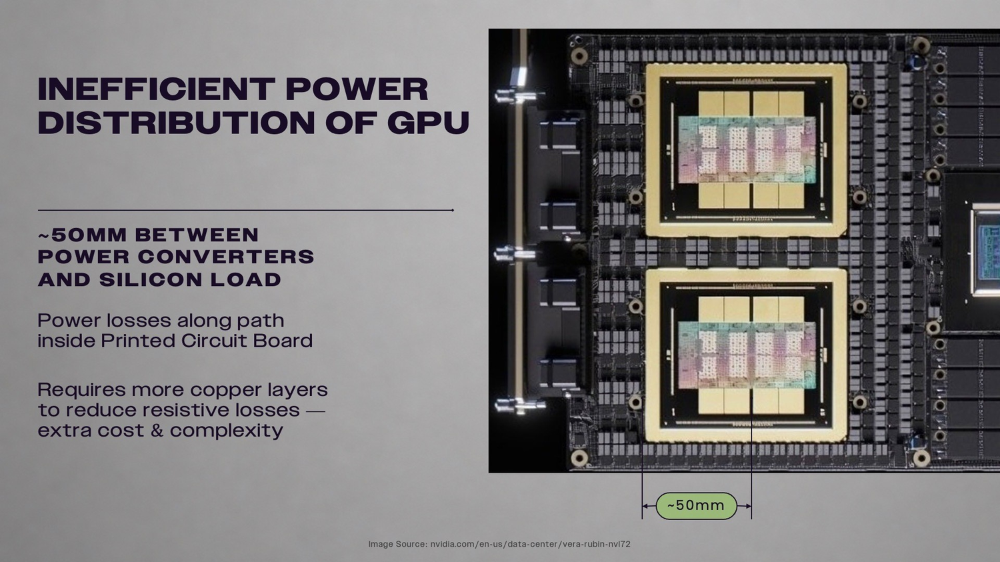
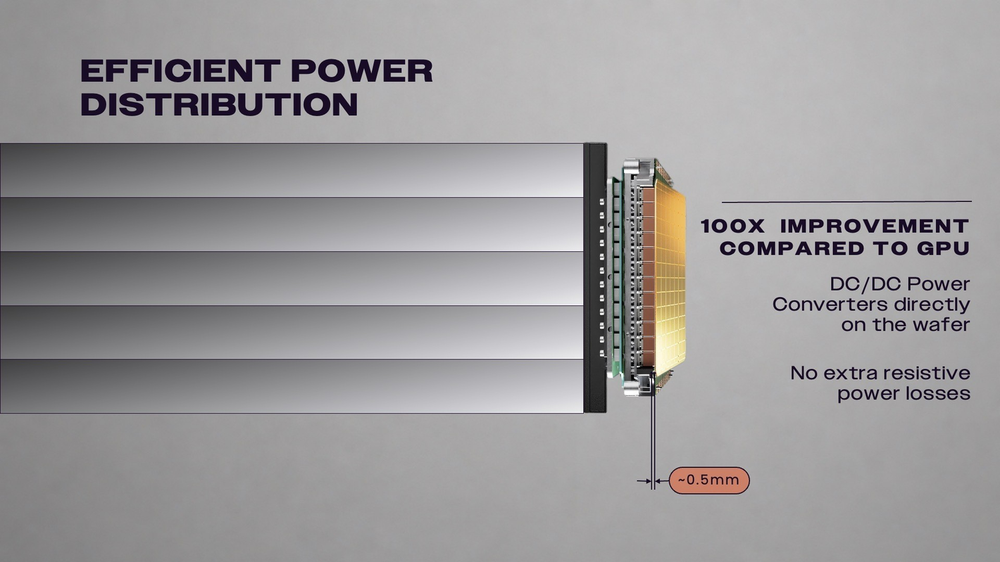
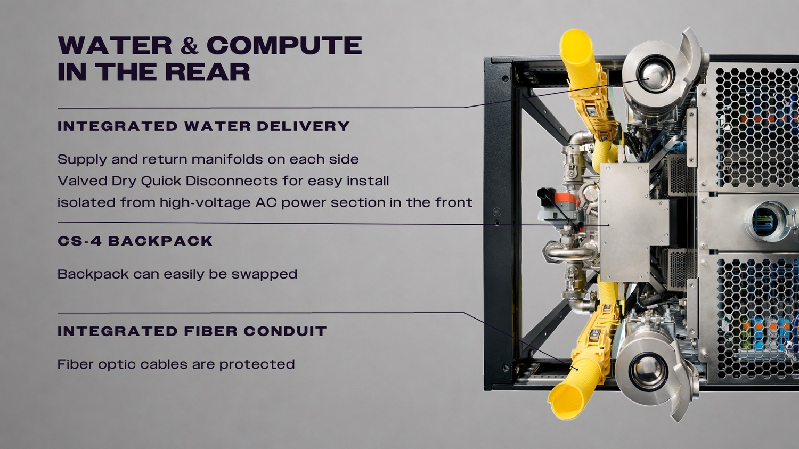
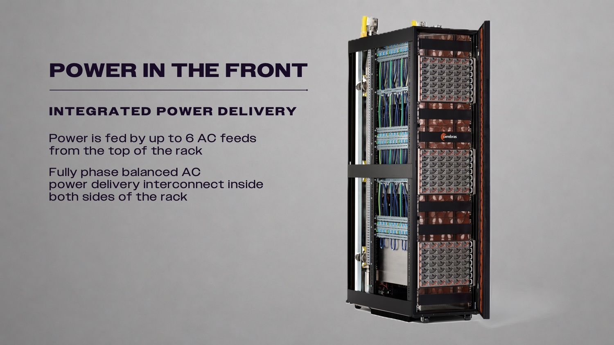
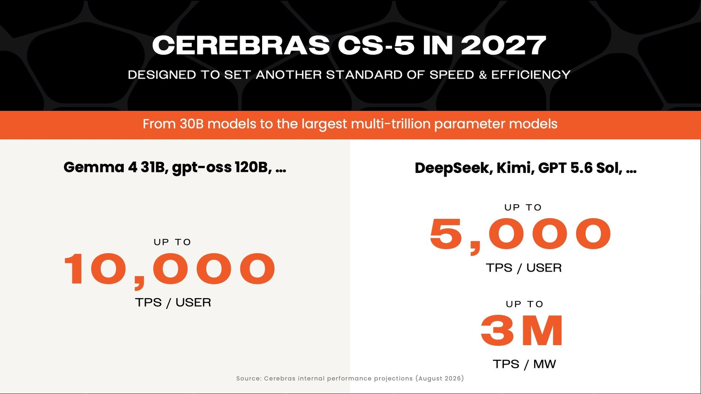
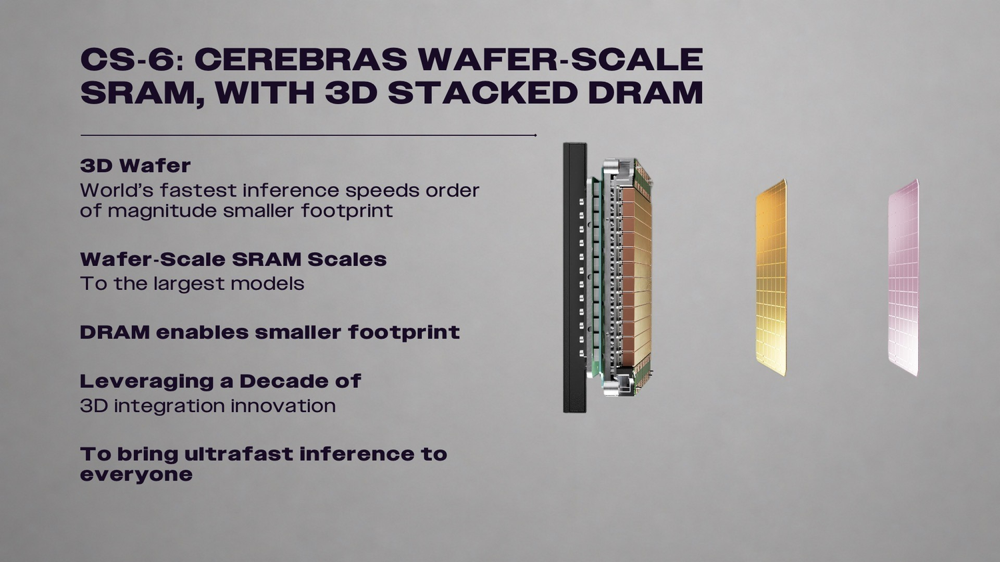
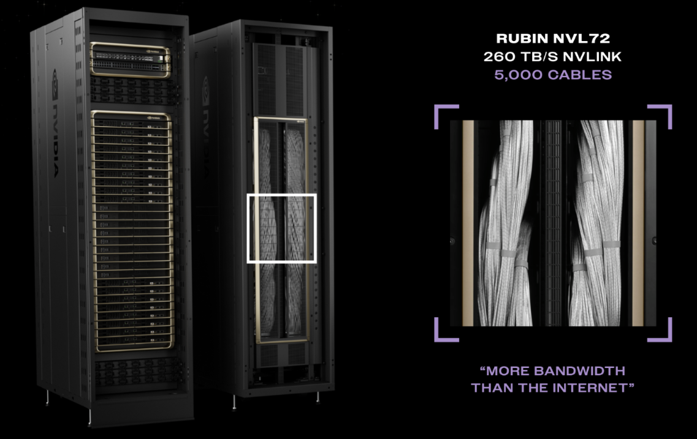
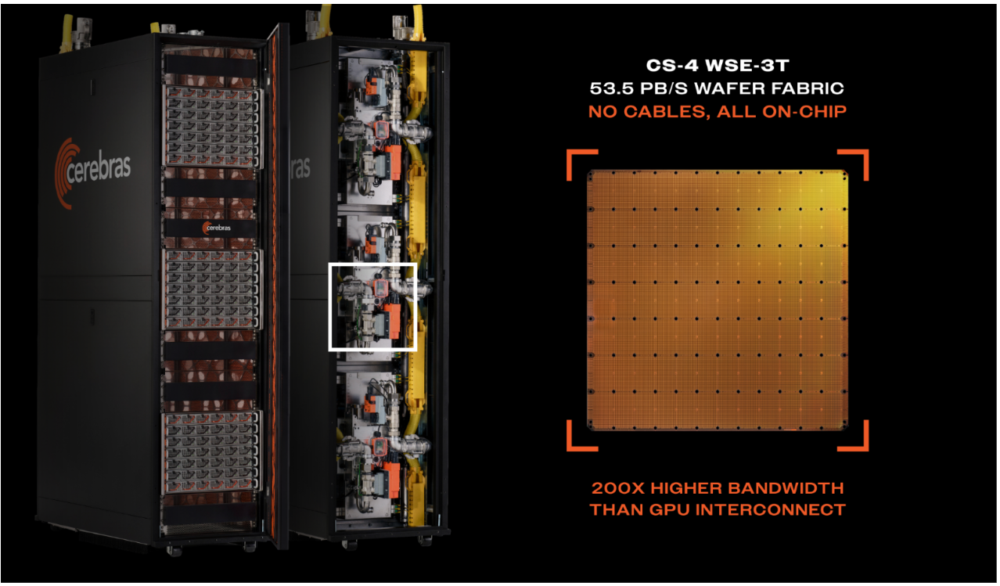

在2026年Hot Chips，Cerebras把CS-4之所以快讲成了三段：把功率变换器挪到离晶圆0.5毫米处、把服务器重构成可插拔的计算背包、再讲清为什么会写在晶圆上的互连比拉几千根线更省。
这篇编译尽量保留它给的硬数字与对照（5+1冗余、277V→54.5V、NVL72五千米线缆），供做推理系统架构的人当参考。原文同时预告了2027的CS-5与走向3D的CS-6，属于厂商路线图，读时请自行判断其前瞻性。
上一周在Supernova 2026，Cerebras发布CS-4，宣称为业界最快AI加速器，也是Nexus新机架规模平台上的第一款系统。加速token速度、吞吐、能效与扩展性是它的主打。这篇演讲就是告诉大家这些增益来自哪，并顺带预览CS-5/CS-6的技术路线。
Nexus支持三颗晶圆级引擎(WSE)，各自装进机架后部一个模块化计算背包(compute backpack)。供电、散热与I/O都是模块的，每一项都能独立演进，这让作者们能把token生成速度做到连年翻倍，同时大幅改善吞吐与能效。
每个背包自带一颗WSE及其专用供电、散热与I/O。它把服务器重构成适合更快交付到数据中心的标准单元：前部的供电机架先装好，计算背包随后可在现场直接插拔落位。

先把电流在电路板上送远是既耗阻又散热的源头。传统GPU系统把电源变换器放在离硅约50毫米处，电流要多层穿铜才能抵达处理器。
CS-4把AC/DC变换器放到离晶圆约0.5毫米处：比GPU近了100倍：最终供电路径上不再经过印刷电路板。结果是几乎同样的电压下能多送出近两倍的电，且输送路径上电阻损耗很小。


散热做进背包里：每个CS-4背包各带一套水处理系统，在超大规模数据中心里安装与维护更快。能量表追踪流量与进出水温度，执行器按需调节流向冷板的流量；干式快断阀让技师不用放空系统就能接拆背包。漏液与凝露传感器可自动把背包置于安全态并切断其电源模块供电。水与计算都留在机架后部，与前面板高压交流设备分开；侧向走行供水/回水歧管，护套管线让光纤避开维护通道。于是更换单个背包不会扰动机架共享的水路或网络。

CS-4机架前部承载三颗背包共享的供电。每个背包最多由30个风冷AC/DC电源模块供电，模块接受最高277V交流、输出54.5V直流，支持5+1、4+1、3+1与4+2等馈电冗余配置，每个模块自带30安断路保护。
至多六路硬接线交流馈入从机架顶部进入，集成互连把功率沿两侧送到断路与电源，现场安装不再需要机架内额外功率线缆。各馈源为每只背包分摊负载，交流互连完全三相平衡。

Nexus按多代系统共用来设计：模块化架构让各项技术能独立推进、更快落地，同时为下一代WSE(将在CS-5首发)预留了协同设计。
面向2027的CS-5的目标是：在主流开源模型(包括Gemma 4 31B、gpt-oss-120b)上做到每用户每秒最高1万输出token。对agentic工作负载：往往一串串顺序调用模型：每一步更快能显著缩短总任务完成时间。
对最大规模的前沿模型(Kimi、GPT-5.6 Sol这类万亿参数级)，CS-5目标仍是每用户每秒最高5,000输出token，以及每兆瓦每秒300万token。同一套架构被设计成能撑起超过50万亿参数的模型，同时保持交互级速度。

做到晶圆规模，需要重新设计封装、供电、散热、互连与系统。过去十年Cerebras逐一解决了这些问题，把世界上唯一样式并量产的晶圆级处理器从疯狂设想变成规模化出货的产品。
二维晶圆级处理器已经占满二维里最实用的面积。要加更多内存，就得在保住片级数据局部性的前提下向上(3D)扩展。2024年起Cerebras把这个想法落到CS-6：把晶圆级SRAM与计算跟3D堆叠DRAM用超带宽连接整合起来，大幅扩展内存容量，同时不牺牲片级处理的速度来源：数据局部性。
晶圆级SRAM已经在经济上能支撑最大模型(含GPT-5.6 Sol及其后续)。DRAM紧密整合后，更多模型重量能安放在单系统内，跑它所需基础设施更少；输出是数量级更小的系统占地里的极速推理，让晶圆级速度普惠更多客户。

AI性能在相当程度上取决于数据在计算核间移动多快。传统系统靠连很多GPU、通过外部链路与交换机协同来扩展；每一次传输都要把数据送出片、穿过系统、在下一次操作前抵达下一片。序列化、同步、交换与软件协调都耗电并发力延迟；小批量下这段通信开销甚至和计算本身一样久。
量级在今天的机架设计里可见: NVIDIA给整座72-GPU Rubin机架标称260 TB/s机架级NVLink带宽，其NVLink主干约含5,000根内部线缆；而单颗Cerebras WSE-3T交出53.5 PB/s片上聚合带宽，比NVL72机架的scale-up带宽高200多倍。
NVIDIA把满机架数千根互连GPU的线说成优点：号称这些线的scale-up/内存带宽比全球互联网还高。但这些线都有真实代价：性能、功耗、成本与可靠性风险。Cerebras论证的核心是：核间通信发生在片内，不需要几千根线去把众多分立处理器装成一台；于是通信延迟、功耗、硬件成本与潜在故障点通通下降。

跨多机架跑一个大模型时，执行被流水线化，把高流量的张量与专家通信留在各晶圆内部；跨晶圆的只有较低流量的数据，主要是激活值。这个做法的价值随模型变大、MoE路由扩张、上下文变长、批量变小而愈发显著。

Cerebras说它的优势会随代际滚雪球：CS-4首款立于Nexus;CS-5把Nexus与下一代WSE结合、定义token生成速度新标尺;CS-6在晶圆规模堆DRAM、把3D集成推到前沿，交付出性能与能效的又一次台阶式跃迁。
传统架构靠加处理器、加交换机、加链路来扩展；Cerebras让计算、内存、供电、散热与I/O在一个共同设计、集成平台上协同推进。这可能就是前沿推理的架构与路线图。
参考：https://www.cerebras.ai/blog/ultrafast-frontier-inference-cerebras-deep-dive-at-hot-chips-2026